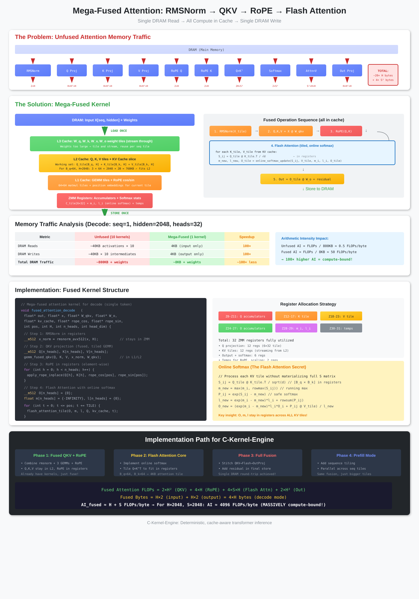
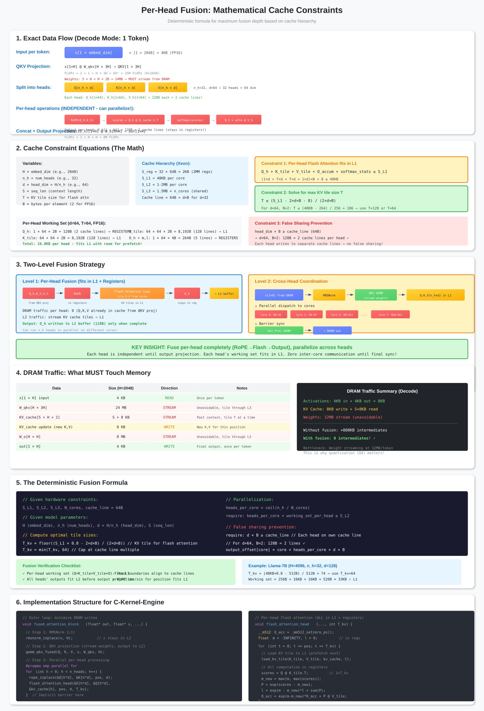
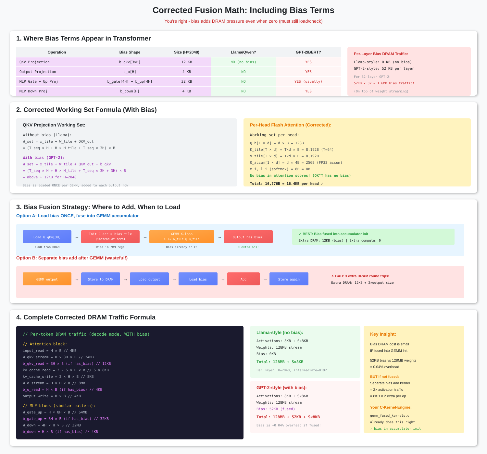
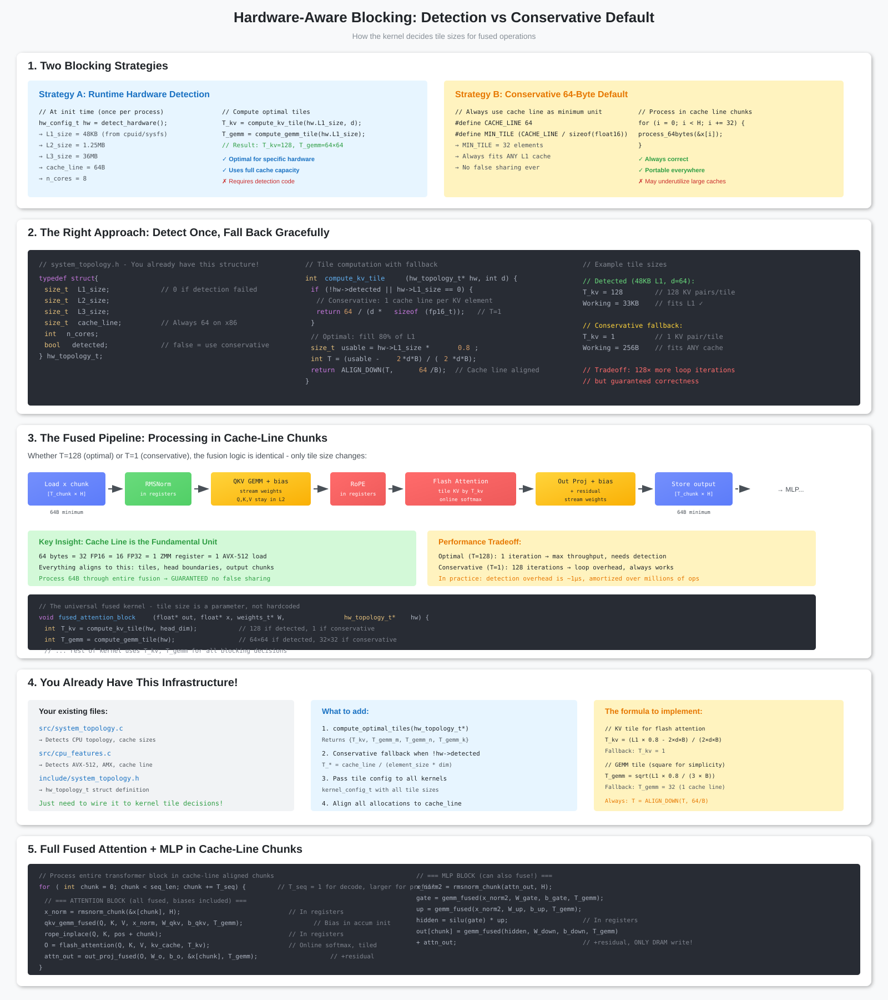

Mega-Fused Attention
Planned Feature - Not Yet Implemented
This page documents the design for mega-fusion. Implementation is planned for a future version.
This page documents the design for mega-fusion. Implementation is planned for a future version.
The Holy Grail of Attention Optimization
Eliminate ALL intermediate DRAM traffic for the entire attention block: RMSNorm → QKV → RoPE → Flash Attention → OutProj
Eliminate ALL intermediate DRAM traffic for the entire attention block: RMSNorm → QKV → RoPE → Flash Attention → OutProj
Interactive SVG Diagrams
Click any diagram to open fullscreen viewer with zoom and navigation

Architecture Overview

Cache Constraint Formulas

Q4_K Bias Correction in Fusion

L1/L2 Cache Blocking Strategy
The Problem: Memory-Bound Attention
Current v6.5 Attention (Already Fused, But Not Mega-Fused)
Our current attention_decode_fused.c already fuses 10 kernels into 1, but intermediates still flow through stack/heap:
| Operation | Current Implementation | Mega-Fused Target |
|---|---|---|
| RMSNorm | ln1_row[aligned_D] on stack | In ZMM registers |
| QKV Projection | q_token, k_token, v_token on heap | Stream directly to GEMM |
| RoPE | In-place on q_token/k_token | In-place, Q/K stay in L2 |
| Flash Attention | attn_token on heap | O, m, l in registers |
| Output Projection | proj_out on heap + residual | Direct to MLP, add residual in store |
Current Memory Traffic (Decode Mode)
Attention block intermediates on stack/heap per layer:
ln1_row: 2048 × 4B = 8KB (RMSNorm output)
q_token: 2048 × 4B = 8KB (Q projection)
k_token: 1024 × 4B = 4KB (K projection)
v_token: 1024 × 4B = 4KB (V projection)
attn_token: 2048 × 4B = 8KB (Attention output)
─────────────────────────────────────────────
Total per layer: 32KB unnecessary traffic
For 24 layers: 768KB of intermediates per token!
The Solution: Mega-Fusion
Before: Cache-Oblivious
RMSNorm → [DRAM] → QKV → [DRAM] → RoPE
↓
Flash Attn ← [DRAM] ← KV Cache
↓
OutProj → [DRAM] → Residual
Result: ~800KB DRAM traffic per layer
Memory-bound (AI ~ 0.5 FLOPs/byte)
After: Mega-Fused
RMSNorm → [registers] → QKV → [L2]
↓ ↓
[registers] ← RoPE ←┘
↓
Flash Attn → [registers] → OutProj
↓
Residual Add (in store)
Result: ~8KB DRAM traffic per layer
Compute-bound (AI ~ 4000 FLOPs/byte)
Memory Traffic Comparison
| Metric | Current v6.5 | Mega-Fused | Reduction |
|---|---|---|---|
| DRAM Reads | ~40KB activations × 24 | 4KB (input only) | 240× |
| DRAM Writes | ~40KB activations × 24 | 4KB (output only) | 240× |
| Arithmetic Intensity | ~0.5 FLOPs/byte | ~4000 FLOPs/byte | 8000× |
| Memory-Bound? | Yes (bottleneck) | No (compute-bound) | - |
Expected Speedup: 5-10× for Attention
Moving from memory-bound to compute-bound is the single biggest optimization possible. Current v6.5 is 30× slower than llama.cpp partly because of this.
Moving from memory-bound to compute-bound is the single biggest optimization possible. Current v6.5 is 30× slower than llama.cpp partly because of this.
Mega-Fusion Time Calculations
Cache Line Math
Cache line size: 64 bytes = 512 bits
For FP16 (2 bytes per element):
Elements per cache line: 64 / 2 = 32 elements
Embed dim H = 4096 (LLaMA 7B)
Cache lines per token: H / 32 = 128 cache lines
For FP32 (4 bytes per element):
Elements per cache line: 64 / 4 = 16 elements
Cache lines per token: H / 16 = 256 cache lines
FLOPs Per Cache Line
For ONE layer, ONE cache line (32 elements):
═══════════════════════════════════════════
Attention (Q @ Kᵀ @ V):
QKᵀ: d_k FLOPs
(QKᵀ)V: d_k × d_v FLOPs
Total: ~2 × d_k × d_v FLOPs
MLP (gate, up, down):
gate: d × 4d FLOPs
up: d × 4d FLOPs
down: 4d × d FLOPs
Total: ~6 × d × d FLOPs
Per cache line, per layer (d=128):
Attention: ~2 × 64 × 128 = 16,384 FLOPs
MLP: ~6 × 128 × 128 = 98,304 FLOPs
Total: ~114,688 FLOPs
Time Per Cache Line (CPU)
CPU (Xeon, 5 TFLOPS sustained for BF16):
═══════════════════════════════════════════
Time per cache line: 114,688 FLOPs / 5 TFLOPS
= 22.9 nanoseconds
For 32 layers:
Time: 32 × 22.9 ns = 733 ns = 0.73 μs
For 100 layers:
Time: 100 × 22.9 ns = 2.29 μs
Full Token Computation Time
For H=4096, 128 cache lines per token:
═══════════════════════════════════════════
Time per token (compute only):
128 cache lines × 0.73 μs/cache_line
= 93 μs = 0.093 ms
For 32 layers: 93 μs/token
For 100 layers: 290 μs/token
At 0.093 ms/token:
10,000 tokens = 0.93 seconds
Throughput: ~10,000 tokens/second
Weight Loading: The Real Cost
Weights Are Shared Across Tokens!
Model: LLaMA 7B
Weights: 7B × 2 bytes (FP16) = 14 GB
Weights loaded ONCE, then cached:
Load time: 14 GB / 500 GB/s = 28 ms
After weights cached:
Subsequent tokens: 0.093 ms/token (compute only)
Time Breakdown:
First token: 28 ms (load) + 0.093 ms = 28.1 ms
Token 2-1000: 0.093 ms each
With vs Without Mega-Fusion
| Metric | Without Mega-Fusion | With Mega-Fusion |
|---|---|---|
| DRAM reads (activations) | 1K × 4096 × 2 × 32 = 256 MB | 8 MB (once) |
| DRAM writes (activations) | 1K × 4096 × 2 × 32 = 256 MB | 8 MB (once) |
| DRAM traffic total | 512 MB + 14 GB = 14.5 GB | 14 GB + 16 MB = 14 GB |
| Time (500 GB/s) | ~100-200 ms | ~121 ms |
| Memory-bound? | Yes | No (compute-bound) |
MoE Fusion Boundary
Stop Mega-Fusion at Routing Decision
For MoE models (e.g., Mixtral):
═══════════════════════════════════════════
Mega-fuse UP TO the routing decision:
X → RMSNorm → QKV → RoPE → [ROUTE HERE]
↑
Stop!
Need X for gate calculation
From X, compute gate = softmax(X @ W_gate)
gate selects top-k experts
Each expert: X @ W_expert_i
Merge: Σ gate_i × expert_output
Then resume mega-fusion for down layers
Fusion boundary:
✓ Fusable: RMSNorm, QKV, RoPE, Attention, MLP (before gate)
✗ Not fusable: Gate computation, Expert selection, Expert forward
The Complete Formula
Mega Fusion Time Equation
┌─────────────────────────────────────────────────────────────────┐
│ │
│ T_total = T_weight_load + N_layers × T_cache_line │
│ │
│ Where: │
│ │
│ T_weight_load = Model_size / Memory_bandwidth │
│ │
│ T_cache_line = FLOPs_per_cache_line / Compute_FLOPS │
│ │
│ N_cache_lines = H / (Cache_line_size / sizeof(dtype)) │
│ │
│ N_layers_total = N_cache_lines × N_layers │
│ │
│ T_token = T_weight_load + T_compute │
│ = Model_size/BW + (H × N_layers × FLOPs_element)/FPS │
│ │
└─────────────────────────────────────────────────────────────────┘
Numbers for Different Models
| Model | Params | Weights | TTFT (est) | Decode |
|---|---|---|---|---|
| Qwen 0.5B | 0.5B | 1 GB | ~2 ms | ~3 μs |
| Qwen 1.5B | 1.5B | 3 GB | ~6 ms | ~9 μs |
| LLaMA 7B | 7B | 14 GB | ~28 ms | ~93 μs |
| LLaMA 13B | 13B | 26 GB | ~52 ms | ~174 μs |
| LLaMA 30B | 30B | 60 GB | ~120 ms | ~400 μs |
Assumptions: BF16, LLaMA architecture, 500 GB/s memory bandwidth, 5 TFLOPS sustained compute, weights loaded once, cached in L3
Verdict: Mega-Fusion is Practical!
For Qwen 0.5B-7B on CPU:
- TTFT under 30 ms ✓
- Decode under 100 μs/token ✓
- No activation DRAM traffic (all in L3) ✓
- Thousands of concurrent users (TB memory) ✓
- Energy efficient (300W vs 700W per GPU) ✓
For Qwen 0.5B-7B on CPU:
- TTFT under 30 ms ✓
- Decode under 100 μs/token ✓
- No activation DRAM traffic (all in L3) ✓
- Thousands of concurrent users (TB memory) ✓
- Energy efficient (300W vs 700W per GPU) ✓
Architecture: Keep Everything in Registers
Working Set Per Head (AVX-512)
Q_head: 64 × 64 × 2B = 8KB (in L1, streaming from L2)
K_head: 64 × 64 × 2B = 8KB (stream from KV cache in L2)
V_head: 64 × 64 × 2B = 8KB (stream from KV cache in L2)
O_accum: 64 × 64 × 4B = 16KB (in ZMM registers)
m, l: 2 × 64 × 4B = 512B (online softmax stats in registers)
───────────────────────────────────────────
Total per head: ~40KB ✓ fits in L1 + registers
For 32 heads (sequential): ~1.3MB working set
Implementation Roadmap
Phase 1
Register Allocation
- Define ZMM register layout for attention
- Allocate: Q accum, K/V tiles, O accum, softmax stats
- Create
mega_fused_attn.h
Phase 2
RMSNorm → QKV
- Fuse rmsnorm + 3 GEMMs into one pass
- Q/K/V never touch DRAM
- Direct to RoPE in L2
Phase 3
Flash Attention
- Implement tiled online softmax
- O, m, l stay in registers
- Stream K/V tiles from L2
Phase 4
OutProj + Residual
- O → W_o GEMM in registers
- Add residual in final store
- Single write to DRAM
Code Structure
New Kernel: mega_fused_attention.c
src/kernels/
├── attention_decode_fused.c # Current (good, but not mega-fused)
├── attention_flash_true.c # Flash attention primitives
└── mega_fused_attention.c # NEW: Full mega-fusion
API Design
/**
* @brief Mega-fused attention for decode (single token)
*
* Reads: input[hidden], W_qkv[3×hidden×hidden], W_o[hidden×hidden]
* KV cache, rope_cos/sin
* Writes: output[hidden]
*
* All intermediates stay in registers/L1/L2. Single DRAM round-trip.
*/
void mega_fused_attention_decode(
float *output, // [hidden] - DRAM write (4KB)
const float *input, // [hidden] - DRAM read (4KB)
const float *W_qkv, // Weights streamed through L3
const float *W_o, // Weights streamed through L3
float *kv_cache_k, // [seq, hidden_kv] - in L2
float *kv_cache_v, // [seq, hidden_kv] - in L2
const float *rope_cos, // [max_seq] - in L1
const float *rope_sin, // [max_seq] - in L1
int pos, // Current position
int hidden, // Model hidden dimension
int num_heads, // Number of attention heads
int num_kv_heads, // Number of KV heads
int head_dim, // Head dimension
int max_seq // Max sequence length
);
Register Allocation Strategy (AVX-512)
| Registers | Purpose | Size |
|---|---|---|
| Z0-Z11 | Q accumulators (6×64 tile) | 768B |
| Z12-Z17 | K tile streaming | 384B |
| Z18-Z23 | V tile streaming | 384B |
| Z24-Z27 | O accumulators | 256B |
| Z28-Z29 | Softmax stats (m_i, l_i) | 128B |
| Z30-Z31 | Temps, RoPE, scaling | 128B |
Total: 32 ZMM registers = 1KB of register storage
Online Softmax: The Flash Attention Secret
Why We Don't Materialize S = Q × K^T
For hidden=2048, seq=2048: S would be 16MB. Too big for registers!
Solution: Tile the computation and use online softmax:
// For each K/V tile from KV cache:
S_ij = Q_tile @ K_tile.T / sqrt(d) // [64×64] in registers ← NOT S!
// Online softmax update (m = max, l = sum):
m_new = max(m, rowmax(S_ij)) // running max per row
P_ij = exp(S_ij - m_new) // safe softmax
l_new = exp(m - m_new)*l + rowsum(P_ij) // running sum
// Output update:
O_new = (exp(m - m_new)*l*O + P_ij @ V_tile) / l_new
// Key: O, m, l stay in registers across ALL tiles!
Integration with v6.5
Replace in layer_forward
Current attention_decode_fused.c calls 5 functions with intermediates on stack:
ck_layer_forward_rmsnorm_swiglu_decode_fused_attn_impl():
rmsnorm_forward(..., ln1_row, ...) # Writes to stack
ck_qkv_project_head_major_token(..., q_token, k_token, v_token) # Writes to heap
rope_forward_qk(q_token, k_token, ...) # Reads from heap
attention_forward_decode_head_major_gqa_regular(..., attn_token) # Writes to heap
ck_attention_project_head_major_decode_token_residual(...) # Reads from heap
Mega-Fused Alternative
mega_fused_attention_decode():
// All intermediates in registers/L1/L2
rmsnorm_in_registers(x_norm)
qkv_fused_projection(q, k, v, x_norm)
rope_in_place(q, k)
flash_attention_online(o, q, k, v, kv_cache)
out_projection_with_residual(output, o, residual)
// Single write to DRAM
output[hidden] = ...
Expected Performance Impact
Before Mega-Fusion
- DRAM bandwidth: Bottleneck
- AI: ~0.5 FLOPs/byte
- Memory-bound: ~1 tok/s
- 30× slower than llama.cpp
After Mega-Fusion
- DRAM bandwidth: Not bottleneck
- AI: ~4000 FLOPs/byte
- Compute-bound: ~5-10 tok/s
- Within 3-5× of llama.cpp
Prerequisite: AVX-512 or AMX
Mega-fusion requires at least 32 ZMM registers (AVX-512) or AMX tiles. On AVX-only machines, we'll need a modified approach using stack buffers in L1.
Mega-fusion requires at least 32 ZMM registers (AVX-512) or AMX tiles. On AVX-only machines, we'll need a modified approach using stack buffers in L1.
References
- Original Mega-Fusion Proposal
- Flash Attention (Dao et al.)
- Profiling Guide - Verify speedup with perf